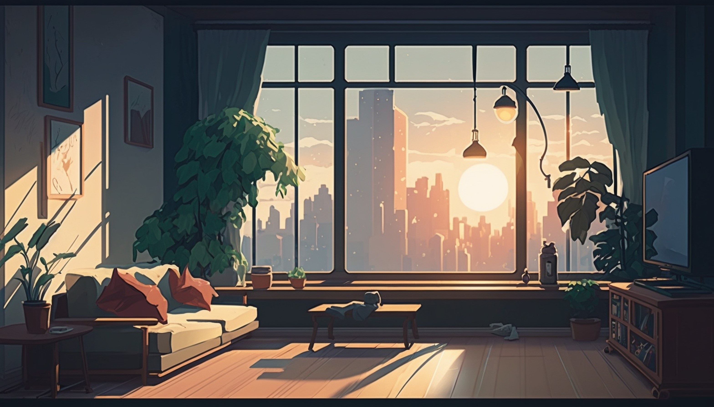

今までの海外旅行で感じた事のあれこれ
海外旅行は楽しみだけど、言葉が不安な方へ
海外旅行での不安の1つに「言葉の壁」がありますよね。結論から言うと海外旅行は英語を話せなくても楽しむことはできます。私自身、英語は中学校レベルで、下記のような決まったフレーズばかりでも旅行自体は不自由なく出来ています。 ■飛行機 Can I have a coffee?（コーヒーをもらえますか？） I got it. （わかりました） ■ホテル I’d like to check in / out. （チェックイン/チェックアウトをお願いします） Could you keep my baggage? （荷物を預かっていただけますか？） I’d like to pick up my baggage. （荷物を受け取りたいです） ■買い物 I’m just looking, thank you. （見ているだけです） I'll take this.（これをください） 旅行から帰ってくると毎回「よし！英語の勉強をしよう」と思いますが、いつも三日坊主です。完璧な英会話は必要なくて、自分の伝えたい事は「単語」と「please」で意外と通じる気もします。 どちらかというと、伝えるのは何とかなっても相手が何を言っているのかを聞き取る方が難しい気がします。 ですが、ここ数年は耳が慣れてきたのか、それとも年を重ねてきたからなのか、何となく相手が言っている事を理解できるようになりました。 若い時は全く聞き取れなかったので最初は「こういうもんだ」と諦めて、少しずつ慣れていけばいいと思います。 旅の恥はかき捨て、下手な英語でも言いたい事・聞きたい事があれば、とにかくチャレンジしてみる事が大事だと思います。 トラブルや緊急時などは日本語でもいいと思います。相手は同じ人間なので、ジャスチャーや気持ちで理解してくれる部分はあると思います。 今までの海外旅行での経験より
今までの経験からミニ情報を箇条書きにしてみました。参考になればと思います。 ・インフォーメーションには行くべし 聞きたい事が無くてもインフォーメーションには色んな情報があるので、観光前に寄ってみるのをお勧めします。特に観光マップはもらっておいて損は無いと思います。入場割引券もインフォーメーションに置いてある確率は高いですので、くまなくチェックしてみて下さい。 ・結局「紙」が便利だったりする 最近は全てがスマホで完結しますが、例えば航空券だったり周遊パスであったり、「紙」でもらえる物は「紙」で用意していたほうが便利な事が多いです。ふとした時のメモにも使えますし、物理的な安心感は大きいと思います。 ・思うがまま自由に行動すべし せっかくの一人旅なので、常識の範囲内で自由に行動して下さい！例えば、私は朝7時から朝ごはんも食べずに観光に出かける事もあります。絶対入るべき美術館をスルーする事もあります。何もない普通の公園で数時間ボーっとしている事もあります。疲れが溜まっている日は一日中ホテルでゴロゴロしている日もあります。 他人にからすると「ありえない」と思う事であっても、せっかくの自分の自由な時間なので、その時をぜひ満喫して下さい。 ・なるべく荷物を減らしたい方へ 海外旅行で荷物が増える原因は「洋服」と「コスメ」だと感じています。「洋服」に関しては現地で洗濯するという方法をとれば少しは減らせると思います。ただ毎日ホテルで手洗いだと結構疲れるので数日に1回にしたり、コインランドリーを使ったりするのをお勧めします。 「コスメ」に関してはオールインワンの物を使うといいと思います。化粧水・乳液・美容クリームが1つになっていて便利ですよね。クレンジングだと海外では「マジックソープ」などが有名なようです。 究極であれば…お湯だけ洗い(湯シャン)の習慣を身に着けるとクレンジング系も保湿系も不要になるので、かなりコスメ類は少なくなると思います。 ・なるべく旅行先での食費を減らしたい方へ 「節約」というより「ケチ」な分類に入りそうですが少しでも旅行先での食費を減らしたい方は、やはり自炊を取り入れるといいと思います。ドミトリーに泊まればキッチンは付いていますが、ホテル泊の場合でも、例えばランチはスーパーで買ってきたパンと野菜と缶詰を使ってサンドイッチを作るなど、色々と工夫は出来ると思います。 ・旅の思い出はアウトプットしておくべし 私は一人旅の時限定ですが必ず旅行記を書くようにしています。老後に旅行が行けないくらい弱った時にベッドで旅行記を読みながら旅を懐かしむのが目的です。それとは別に数年前の自分の旅行記を見返す事がありますが「へぇ、そんな事思ったんだ」と自分の事ながら驚く事が多々あり、次回の旅行の参考になったりします。 旅行記には「どこどこに行った」よりも「その時自分がどう思ったか」を重点に書く事をお勧めします。また旅行記以外ではフォトブックもお勧めです。お気に入りの写真を集めたら1000円もかからず結構立派な物が出来上がるので記念になります。 ■旅行記(4travel) https://4travel.jp/ ■フォトブック(しまうまプリント) https://www.n-pri.jp/ 今後はコロナ禍後の旅行でのヒントも増やしていきたいと思います！ 海外旅行のヒントを元に、まずはどこに行くかを決めましょう 初めての女性ひとり旅にもおすすめの海外エリアスポンサーリンク